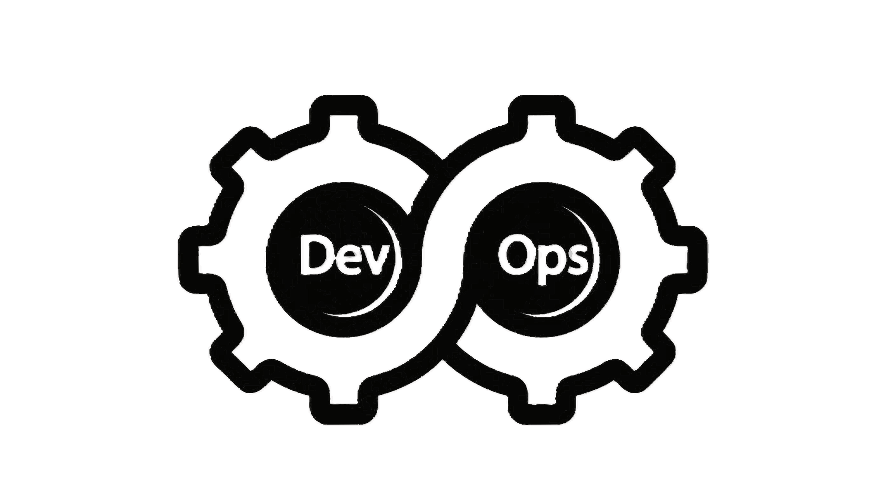
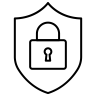
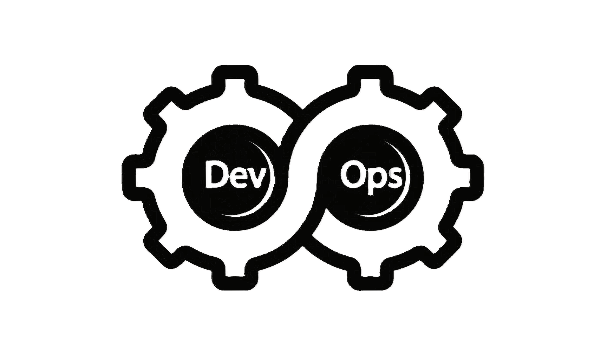
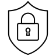
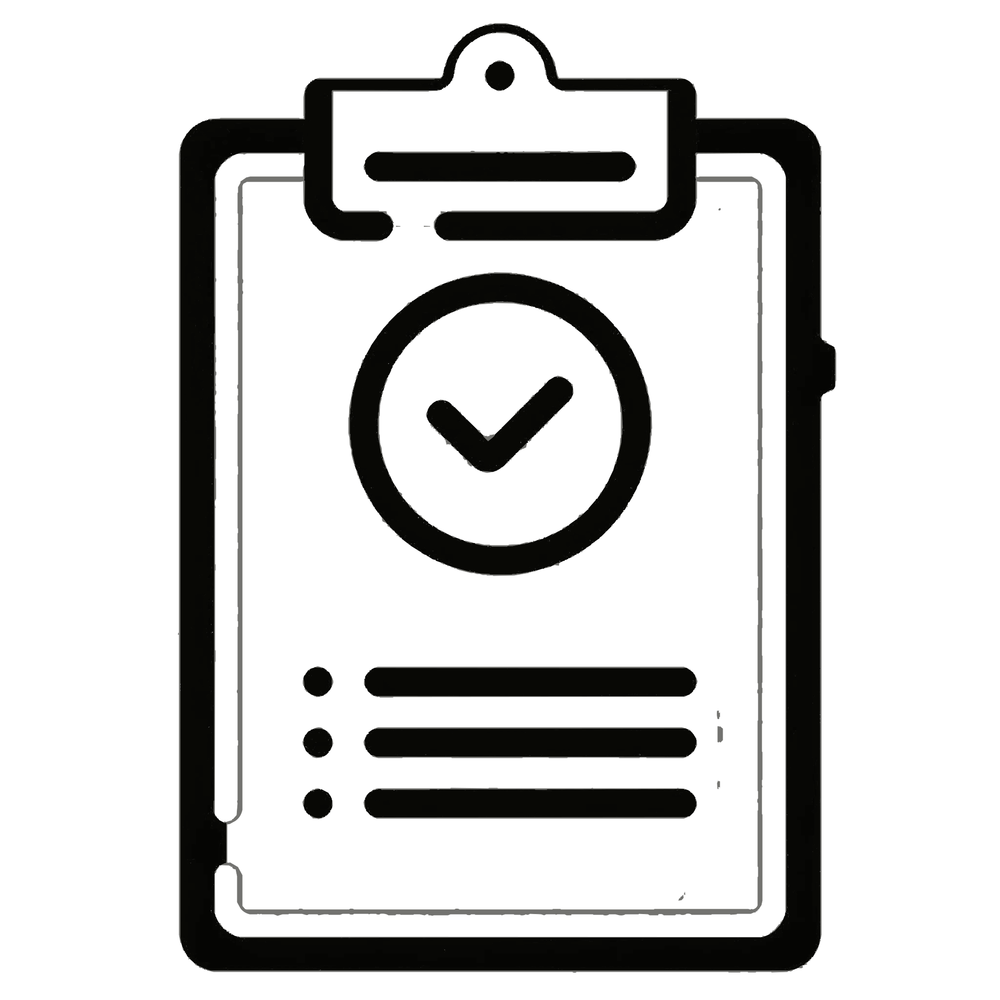

Repositori de materials M05 i M03
Hacking Ètic · Posada en Producció Segura
Institut Nicolau Copèrnic — Terrassa
 ✦
DevOps✦
Ciberseguretat✦
OWASP
✦
DevOps✦
Ciberseguretat✦
OWASP Descripció
Pàgina web educativa dels mòduls:
M05 – Hacking Ètic
M03 – Posada en
Producció Segura
Plataforma centralitzada per consultar apunts, fer exercicis interactius, autoavaluacions i pràctiques guiades de M05 i M03. Tot responsive i actualitzat segons avança el curs.
L’objectiu és disposar d’una plataforma:
- Visualment coherent i moderna
- Responsive
- Organitzada per unitats
- Fàcilment ampliable
- Amb exercicis interactius
Què pots fer aquí?
Tot el que necessites per aprendre i practicar M05 i M03 de forma pràctica i organitzada.
Consultar teoria i apunts
Organitzats per unitat i mòdul, amb exemples reals i actualitzacions freqüents.
Pràctiques guiades
Laboratoris simulats i passos a seguir (estil TryHackMe / captures pròpies).
Autoavaluacions interactives
Qüestionaris amb feedback immediat i seguiment del progrés.
Checklists de seguretat
OWASP Top 10, hardening de sistemes, DevSecOps i més.
Recursos descarregables
Scripts, plantilles Docker, checklists en PDF i plantilles de informes.
FAQ i exemples d'exàmens
Preguntes freqüents + mostres d'exàmens i projectes anteriors.
🎯→🏆 Finalitat
- → Centralitzar continguts teòrics i pràctics
- → Facilitar l’accés als materials des de qualsevol dispositiu
- → Incorporar exercicis d’autoavaluació
- → Permetre una ampliació progressiva dels mòduls
M05 – Hacking Ètic 
Introducció al Hacking Ètic
En desenvolupamentAtacs a Xarxes Sense Fils
AccessibleAccés Inicial (Enginyeria Social i Phishing)
En desenvolupamentEscalada de privilegis i persistència
En desenvolupamentAtacs a aplicacions web (OWASP)
En desenvolupament M03 – Posada en Producció Segura
DevOps i Automatització
- DevOps i infraestructura Dev
- Arquitectures contenidors Dev
- Posada producció Dev
- Orquestració Dev
Proves de Programari
- Intro proves auto Dev
- Tests frameworks web Dev
- Proves apps mòbils Dev
Seguretat Web i Correu
- Avaluació riscos Dev
- Mesures protecció Dev
- Correu segur Dev
Aplicacions Mòbils
- Seguretat apps Dev
- Ofuscació codi Dev
- Monitoratge Dev
⚠️ Avís legal
Aquest projecte té finalitats exclusivament educatives.
Les pràctiques relacionades amb tècniques de seguretat o anàlisi de vulnerabilitats només s’han de realitzar en entorns controlats i amb autorització expressa.